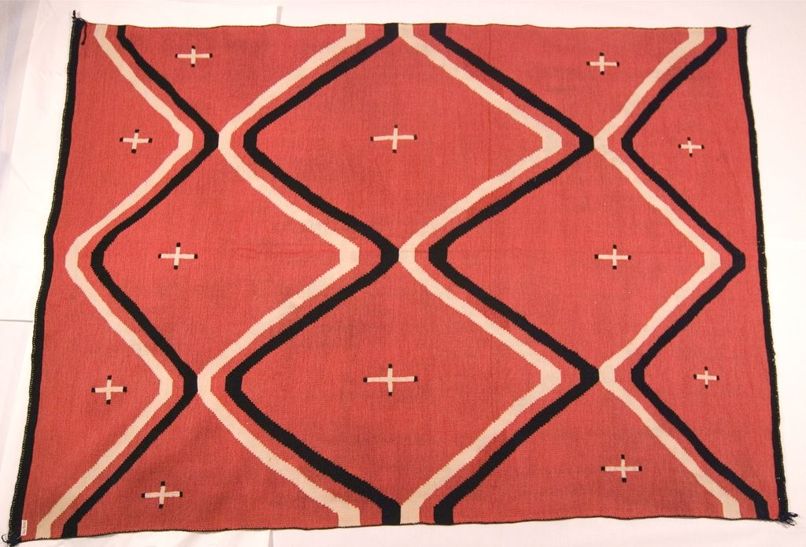

Textiles · 1074-114
Shoulder Blanket


Red background with four zigzag stripes formed of parallel blue and white lines. They visually create large open diamond designs. There are small white crosses with indigo tips within each diamond pattern; handspun.